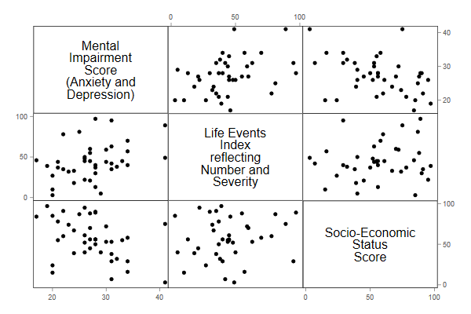
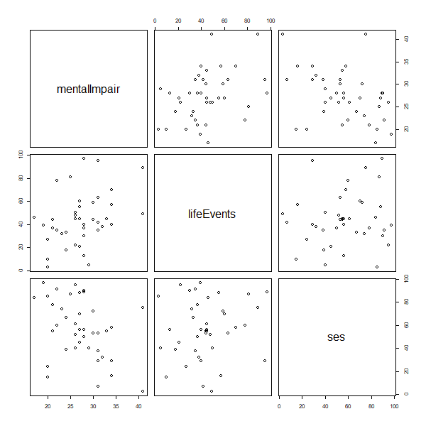
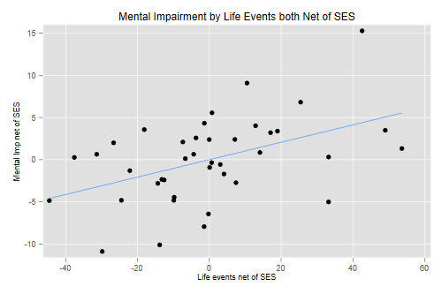
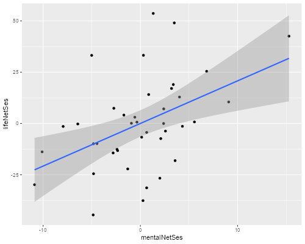
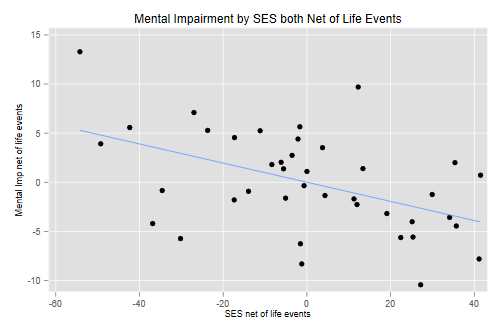
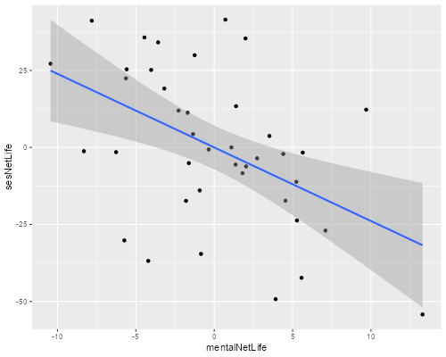

Agresti and Finlay(1997) report data from a Florida study investigating the relationship between mental health and several explanatory variables using a random sample of 40 subjects. The outcome of interest is an index of mental impairment that incorporates measures of anxiety and depression. We will consider two predictors: a life-events score that combines the number and severity of various stressful life events, and an index of socio-economic status (SES).
The data are available at https://grodri.github.io/datasets/mentalhealth.dta,
a Stata file that can be read natively into Stata or from R using the
haven library. As usual we show solutions in Stata and
R.
(a) Draw a scatterplot matrix with the three variables of interest, and comment briefly on the relationship between each pair of variables.
. use https://grodri.github.io/datasets/mentalhealth.dta, clear (Agresti Finlay data on Mental Health) . graph matrix mentalImp lifeEv ses . graph export ps1fig1.png, width(600) replace file ps1fig1.png saved as PNG format
> library(haven)
> af <- read_dta("https://grodri.github.io/datasets/mentalhealth.dta")
> png("ps1fig1r.png", width=600, height=600, units = "px")
> pairs(af)
> dev.off()
null device
1
 
Mental impairment shows a positive association with stressful life events and a negative association with SES, with no obvious evidence of non-linearities. Life events and SES show a rather weak positive relationship.
(b) Run a simple linear regression of the mental impairment index on the life events index, interpret the slope, and test its significance using a t-test.
. reg mentalImp lifeEv
Source │ SS df MS Number of obs = 40
─────────────┼────────────────────────────────── F(1, 38) = 6.11
Model │ 161.048429 1 161.048429 Prob > F = 0.0180
Residual │ 1001.35157 38 26.3513571 R-squared = 0.1385
─────────────┼────────────────────────────────── Adj R-squared = 0.1159
Total │ 1162.4 39 29.8051282 Root MSE = 5.1334
─────────────┬────────────────────────────────────────────────────────────────
mentalImpair │ Coefficient Std. err. t P>|t| [95% conf. interval]
─────────────┼────────────────────────────────────────────────────────────────
lifeEvents │ .0898257 .0363349 2.47 0.018 .0162696 .1633818
_cons │ 23.30949 1.806751 12.90 0.000 19.65192 26.96707
─────────────┴────────────────────────────────────────────────────────────────
. di e(F), (_b[lifeEv]/_se[lifeEv])^2
6.1115801 6.1115801
. sum lifeEv
Variable │ Obs Mean Std. dev. Min Max
─────────────┼─────────────────────────────────────────────────────────
lifeEvents │ 40 44.425 22.62276 3 97
> m1 <- lm(mentalImpair ~ lifeEvents, data = af)
> summary(m1)
Call:
lm(formula = mentalImpair ~ lifeEvents, data = af)
Residuals:
Min 1Q Median 3Q Max
-10.4415 -3.6899 -0.5973 3.6215 13.2890
Coefficients:
Estimate Std. Error t value Pr(>|t|)
(Intercept) 23.30949 1.80675 12.901 1.85e-15 ***
lifeEvents 0.08983 0.03633 2.472 0.018 *
---
Signif. codes: 0 '***' 0.001 '**' 0.01 '*' 0.05 '.' 0.1 ' ' 1
Residual standard error: 5.133 on 38 degrees of freedom
Multiple R-squared: 0.1385, Adjusted R-squared: 0.1159
F-statistic: 6.112 on 1 and 38 DF, p-value: 0.01802
> 2.472^2
[1] 6.110784
A one point difference in the life events index is associated with an average difference of 0.09 points in the mental impairment index. The t-test printed in the output is 2.47 on 38 d.f. and is significant at the usual five percent level. Squaring this value gives 6.11, the same as the F test. The constant represents the average mental impairment score among people who score zero in the life events index, which combines number and severity of events. Assuming that people who score zero have experienced no stressful life events the constant would be meaningful, even if just outside the range of the data, which goes from 3 to 97.
(c) What proportion of the variation across subjects in the index of mental health is explained by the life events index? How is this proportion related to Pearson’s correlation coefficient?
. di e(mss)/(e(mss) + e(rss)) .1385482 . quietly cor mentalImp lifeEv
> m0 <- lm(mentalImpair ~ 1, data = af) > rss <- function(model) sum(residuals(model)^2) > p <- rss(m1)/rss(m0) > c(p, sqrt(p)) [1] 0.8614518 0.9281443
The proportion of variance explained, calculated above from the sums of squares, is 0.1385 or 14%, and is of course the same as R-squared, which for simple regression is the squared of Pearson’s r.
(d) Check the linearity of this relationship by adding a quadratic term on the index of life events. In general it is a good idea to center variables on their mean before squaring; this reduces collinearity and simplifies interpretation. Either way you should find that we don’t really need a quadratic term.
. quietly sum lifeEv
. gen lifeCsq = (lifeEv - r(mean))^2
. reg mentalImp lifeEv lifeCsq
Source │ SS df MS Number of obs = 40
─────────────┼────────────────────────────────── F(2, 37) = 3.04
Model │ 164.054361 2 82.0271805 Prob > F = 0.0599
Residual │ 998.345639 37 26.9823146 R-squared = 0.1411
─────────────┼────────────────────────────────── Adj R-squared = 0.0947
Total │ 1162.4 39 29.8051282 Root MSE = 5.1945
─────────────┬────────────────────────────────────────────────────────────────
mentalImpair │ Coefficient Std. err. t P>|t| [95% conf. interval]
─────────────┼────────────────────────────────────────────────────────────────
lifeEvents │ .0943156 .0391509 2.41 0.021 .0149884 .1736428
lifeCsq │ -.0004038 .0012098 -0.33 0.740 -.002855 .0020474
_cons │ 23.31152 1.828264 12.75 0.000 19.6071 27.01593
─────────────┴────────────────────────────────────────────────────────────────
> library(dplyr)
> af <- mutate(af, lifeCsq = (lifeEvents - mean(lifeEvents))^2)
> m2 <- lm(mentalImpair ~ lifeEvents + lifeCsq, data = af)
> summary(m2)
Call:
lm(formula = mentalImpair ~ lifeEvents + lifeCsq, data = af)
Residuals:
Min 1Q Median 3Q Max
-10.6490 -3.2865 -0.3971 3.7625 13.0755
Coefficients:
Estimate Std. Error t value Pr(>|t|)
(Intercept) 23.3115159 1.8282640 12.751 4.14e-15 ***
lifeEvents 0.0943156 0.0391509 2.409 0.0211 *
lifeCsq -0.0004038 0.0012098 -0.334 0.7404
---
Signif. codes: 0 '***' 0.001 '**' 0.01 '*' 0.05 '.' 0.1 ' ' 1
Residual standard error: 5.194 on 37 degrees of freedom
Multiple R-squared: 0.1411, Adjusted R-squared: 0.09471
F-statistic: 3.04 on 2 and 37 DF, p-value: 0.05993
The t-statistic of -0.33 on 37 d.f. for the quadratic term is clearly not significant, so we have no evidence against the linearity of the association. By centering the square term the coefficient of the linear term represents the slope at the mean.
(e) Regress the index of mental impairment on SES, to verify the hypothesis that whether or not money buys happiness, it is certainly associated with better mental health. Calculate Pearson’s correlation as a summary of the association. Interpretation of the regression coefficient is hampered by the arbitrary nature of both scales. Rerun the regression standardizing both indices and interpret the resulting slope. Compare it with Pearson’s r.
. reg mentalImp ses
Source │ SS df MS Number of obs = 40
─────────────┼────────────────────────────────── F(1, 38) = 7.18
Model │ 184.654398 1 184.654398 Prob > F = 0.0109
Residual │ 977.745602 38 25.7301474 R-squared = 0.1589
─────────────┼────────────────────────────────── Adj R-squared = 0.1367
Total │ 1162.4 39 29.8051282 Root MSE = 5.0725
─────────────┬────────────────────────────────────────────────────────────────
mentalImpair │ Coefficient Std. err. t P>|t| [95% conf. interval]
─────────────┼────────────────────────────────────────────────────────────────
ses │ -.0860779 .0321317 -2.68 0.011 -.1511251 -.0210308
_cons │ 32.17201 1.987649 16.19 0.000 28.14823 36.1958
─────────────┴────────────────────────────────────────────────────────────────
. scalar rssSes = e(rss) // for use in 2.b
. cor mentalImp ses
(obs=40)
│ mental~r ses
─────────────┼──────────────────
mentalImpair │ 1.0000
ses │ -0.3986 1.0000
. egen mentalStd = std(mentalImp)
. egen sesStd = std(ses)
. reg mentalStd sesStd
Source │ SS df MS Number of obs = 40
─────────────┼────────────────────────────────── F(1, 38) = 7.18
Model │ 6.19539031 1 6.19539031 Prob > F = 0.0109
Residual │ 32.8046105 38 .863279224 R-squared = 0.1589
─────────────┼────────────────────────────────── Adj R-squared = 0.1367
Total │ 39.0000008 39 1.00000002 Root MSE = .92913
─────────────┬────────────────────────────────────────────────────────────────
mentalStd │ Coefficient Std. err. t P>|t| [95% conf. interval]
─────────────┼────────────────────────────────────────────────────────────────
sesStd │ -.3985676 .1487796 -2.68 0.011 -.6997562 -.0973791
_cons │ 5.07e-09 .1469081 0.00 1.000 -.2973998 .2973998
─────────────┴────────────────────────────────────────────────────────────────
> m3 <- lm(mentalImpair ~ ses, data = af)
> cor(af$mentalImpair, af$ses)
[1] -0.3985676
> std <- function(x) (x - mean(x))/sqrt(var(x))
> m3s <- lm(std(mentalImpair) ~ std(ses), data = af)
> summary(m3s)
Call:
lm(formula = std(mentalImpair) ~ std(ses), data = af)
Residuals:
Min 1Q Median 3Q Max
-1.99304 -0.50321 0.05384 0.50155 2.79954
Coefficients:
Estimate Std. Error t value Pr(>|t|)
(Intercept) -2.244e-16 1.469e-01 0.000 1.0000
std(ses) -3.986e-01 1.488e-01 -2.679 0.0109 *
---
Signif. codes: 0 '***' 0.001 '**' 0.01 '*' 0.05 '.' 0.1 ' ' 1
Residual standard error: 0.9291 on 38 degrees of freedom
Multiple R-squared: 0.1589, Adjusted R-squared: 0.1367
F-statistic: 7.177 on 1 and 38 DF, p-value: 0.01085
The estimated regression coefficient shows that high SES tends to be associated with lower mental impairment, respondents score on average 0.086 impairment pointw lower for every point in the SES scale. Pearson’s correlation coefficient is -0.40, indicating a moderate negative association.
If we standardize the variables subtracting the mean and dividing by
the standard deviation, the constant becomes zero and the slope
coincides with Pearson’s correlation coefficient. Subjects who are one
standard deviation above the mean SES are, on average, 0.4 standard
deviations below the mean in mental impairment. (BTW Stata will do these
calculations if you use the option beta.)
(a) Run a regression of the index of mental impairment on both SES and the index of live events and note that both slopes are highly significant. Interpret briefly the estimate of the coefficient of life events, and compare it with the estimate from the simple linear regression of 1.b.
. reg mentalImp ses lifeEv
Source │ SS df MS Number of obs = 40
─────────────┼────────────────────────────────── F(2, 37) = 9.49
Model │ 394.238399 2 197.119199 Prob > F = 0.0005
Residual │ 768.161601 37 20.7611244 R-squared = 0.3392
─────────────┼────────────────────────────────── Adj R-squared = 0.3034
Total │ 1162.4 39 29.8051282 Root MSE = 4.5564
─────────────┬────────────────────────────────────────────────────────────────
mentalImpair │ Coefficient Std. err. t P>|t| [95% conf. interval]
─────────────┼────────────────────────────────────────────────────────────────
ses │ -.0974755 .0290848 -3.35 0.002 -.1564069 -.0385441
lifeEvents │ .1032595 .0324995 3.18 0.003 .0374093 .1691096
_cons │ 28.22981 2.174222 12.98 0.000 23.82442 32.63521
─────────────┴────────────────────────────────────────────────────────────────
> m4 <- lm(mentalImpair ~ lifeEvents + ses, data = af)
> summary(m4)
Call:
lm(formula = mentalImpair ~ lifeEvents + ses, data = af)
Residuals:
Min 1Q Median 3Q Max
-8.678 -2.494 -0.336 2.886 10.891
Coefficients:
Estimate Std. Error t value Pr(>|t|)
(Intercept) 28.22981 2.17422 12.984 2.38e-15 ***
lifeEvents 0.10326 0.03250 3.177 0.00300 **
ses -0.09748 0.02908 -3.351 0.00186 **
---
Signif. codes: 0 '***' 0.001 '**' 0.01 '*' 0.05 '.' 0.1 ' ' 1
Residual standard error: 4.556 on 37 degrees of freedom
Multiple R-squared: 0.3392, Adjusted R-squared: 0.3034
F-statistic: 9.495 on 2 and 37 DF, p-value: 0.0004697
We find highly significant net effects of both SES and life events, as evidenced by t-statistics of -3.35 and 3.18, respectively, both on 37 d.f. Comparing subjects with the same SES, those who score one point higher in the stressful life events index score on average one-tenth of a point higher in the mental impairment index. The estimate is very similar to the value in 1.b, 0.10 versus 0.09, with the very slight increase indicating that a small part of the initial difference could be attributed to the fact that people with higher life events scores tend to have lower SES.
(b) Construct an F-test for the net effect of life events after adjusting for SES using the sums of squares you have already calculated. Verify that it coincides with the square of the t-test in 2.a.
. scalar rssAdditive = e(rss) . di (rssSes - rssAdditive)/(rssAdditive/e(df_r)) 10.095022 . di (_b[lifeEv]/_se[lifeEv])^2 10.095022
> F <- (rss(m3) - rss(m4))/(rss(m4)/m4$df) # why we don't use F for FALSE :) > F; sqrt(F) [1] 10.09502 [1] 3.177266
(c) What proportion of the variation in mental health has been “explained” by the two variables together? What’s the square root of this value?
. di e(r2) .33915898 . di sqrt(e(r2)) .58237357
> R2 <- 1 - rss(m4)/rss(m0) > R2; sqrt(R2) [1] 0.339159 [1] 0.5823736
The proportion of variance explained is of course R-squared. The square root it the multiple correlation coefficient, in this case 0.5824.
(d) Compute fitted values for this model and calculate Pearson's correlation between observed and fitted values. Does this number look familiar?
. predict fv
(option xb assumed; fitted values)
. corr mentalImp fv
(obs=40)
│ mental~r fv
─────────────┼──────────────────
mentalImpair │ 1.0000
fv │ 0.5824 1.0000
> fv <- fitted(m4) > cor(af$mentalImpair, fv) [1] 0.5823736
The correlation between observed and fitted values is 0.5824, the same as the multiple correlation coefficient.
(e) What proportion of the variation left unexplained by SES can be attributed to life events? How is this number related to the partial correlation between mental impairment and life events given SES?
. di (rssSes - rssAdditive)/rssSes
.21435433
. pcorr mentalImp lifeEv ses
(obs=40)
Partial and semipartial correlations of mentalImpair with
Partial Semipartial Partial Semipartial Significance
Variable │ corr. corr. corr.^2 corr.^2 value
────────────┼─────────────────────────────────────────────────────────────────
lifeEvents │ 0.4630 0.4246 0.2144 0.1803 0.0030
ses │ -0.4826 -0.4479 0.2329 0.2006 0.0019
. mata st_matrix("r(p_corr)")[1,1]^2
.2143543273
> library(ppcor) # for partial correlation
> pr2 <- (rss(m3) - rss(m4))/rss(m3)
> pr2; sqrt(pr2)
[1] 0.2143543
[1] 0.4629842
> pcor(af[, -4])$estimate # skip lifeCsq
mentalImpair lifeEvents ses
mentalImpair 1.0000000 0.4629842 -0.4825715
lifeEvents 0.4629842 1.0000000 0.3191731
ses -0.4825715 0.3191731 1.0000000
The partial correlation between mental impairment and life events adjusting for SES is 0.463, and its square is 0.214, the proportion of variance in mental impairment left unexplained by SES that can be attributed to the life events index.
(a) Regress the index of mental impairment on SES and save the raw residuals in a variable called mentalNetSes. Regress the index of life events on SES and save the raw residuals in a variable called lifeNetSes.
. quietly reg mentalImp ses . predict mentalNetSes, r . quietly reg lifeEv ses . predict lifeNetSes, r
> ms <- lm(mentalImpair ~ ses, data = af) > af$mentalNetSes = residuals(ms) > ls <- lm(lifeEvents ~ ses, data = af) > af$lifeNetSes = residuals(ls)
(b) Plot mental impairment net of SES against life events net of SES. Do we have any indication that this relationship may not be linear?
. scatter mentalNetSes lifeNetSes || lfit mentalNetSes lifeNetSes /// > , title(Mental Impairment by Life Events both Net of SES) legend(off) /// > xtitle(Life events net of SES) ytitle(Mental Imp net of SES) . graph export ps1fig2.png, width(500) replace file ps1fig2.png saved as PNG format
> library(ggplot2)
> ggplot(af, aes(mentalNetSes, lifeNetSes)) + geom_point() + geom_smooth(method="lm")
> ggsave("ps1fig2r.png", width = 500/72, height = 400/72, dpi = 72)
 
We see no evidence of non-linearities. (See note on visual aids at the end.)
(c) Compute the correlation between the constructed variables mental impairment net of SES and life events net of SES, and verify that it is the same as the partial correlation of 2.e.
. cor mentalNetSes lifeNetSes
(obs=40)
│ mental~s lifeNe~s
─────────────┼──────────────────
mentalNetSes │ 1.0000
lifeNetSes │ 0.4630 1.0000
> cor(af$mentalNetSes , af$lifeNetSes) [1] 0.4629842
This is indeed the same 0.463 we obtained in 2.d; the life events index accounts for 21.4% of the variation in mental impairment after adjusting for linear effects of SES.
(d) Regress mental impairment net of SES on life events net of SES. The estimated constant should be be essentially zero. Compare the estimated slope with the regression coefficient of life events in 2.a.
. reg mentalNetSes lifeNetSes
Source │ SS df MS Number of obs = 40
─────────────┼────────────────────────────────── F(1, 38) = 10.37
Model │ 209.583996 1 209.583996 Prob > F = 0.0026
Residual │ 768.161621 38 20.2147795 R-squared = 0.2144
─────────────┼────────────────────────────────── Adj R-squared = 0.1937
Total │ 977.745617 39 25.0704004 Root MSE = 4.4961
─────────────┬────────────────────────────────────────────────────────────────
mentalNetSes │ Coefficient Std. err. t P>|t| [95% conf. interval]
─────────────┼────────────────────────────────────────────────────────────────
lifeNetSes │ .1032595 .032069 3.22 0.003 .0383392 .1681797
_cons │ 6.48e-09 .7108934 0.00 1.000 -1.439129 1.439129
─────────────┴────────────────────────────────────────────────────────────────
> lm(mentalNetSes ~ lifeNetSes, data = af) Call: lm(formula = mentalNetSes ~ lifeNetSes, data = af) Coefficients: (Intercept) lifeNetSes 2.211e-16 1.033e-01
The constant is indeed zero and the slope is exactly the same as the coefficient of life events in the multiple regression equation. This result helps illustrate the usual interpretation of multiple regression coefficients as representing differences net of all other variables.
(e) Construct an added-variable plot of mental impairment net of life events versus SES net of life events, to check the linearity of that relationship after adjusting for the index of life events.
. quietly regress mentalImp lifeEv . predict mentalNetLife, r . quietly regress ses lifeEv . predict sesNetLife, r . scatter mentalNetLife sesNetLife || lfit mentalNetLife sesNetLife /// > , title(Mental Impairment by SES both Net of Life Events) legend(off) /// > xtitle(SES net of life events) ytitle(Mental Imp net of life events) . graph export ps1fig3.png, width(500) replace file ps1fig3.png saved as PNG format
> af$mentalNetLife = residuals(lm(mentalImpair ~ lifeEvents, data=af))
> af$sesNetLife = residuals(lm(ses ~ lifeEvents, data=af))
> ggplot(af, aes(mentalNetLife, sesNetLife)) + geom_point() + geom_smooth(method="lm")
> ggsave("ps1fig3r.png", width = 500/72, height = 400/72, dpi = 72)
 
The relationship looks reasonably linear, with a slight hint that it might be a bit steeper at lower SES levels after adjusting for the frequency and severity of life events.
Note: Stata’s avplot and R’s
avPlot() in the car package can do added
variable plots, but here you have to do them “by hand”, using the
software only to compute and plot estimates and fitted values. This is
instructive and allows us to verify the connection with partial
correlations. It also opens the door to using scatterplot smoothers to
help judge the linearity of the relationship.
Stata’s lowess command R’s lowess() function does a locally
weighted regression; for each value of x it generates a fitted value
using a line computed from neighboring observations, with weights that
decline as you move away from x. The size of the neighborhood is called
the bandwidth, and is chosen to obtain a balance between smoothness and
goodness of fit. Try the commands
lowess mentalNetSes lifeNetSes and
lowess mentalNetLife sesNetLife as supplements to the
analyses in 3.b and 3.e. See also
loess(). Or just use the default smoother in
ggplot! Try this on 3.b and 3.e.